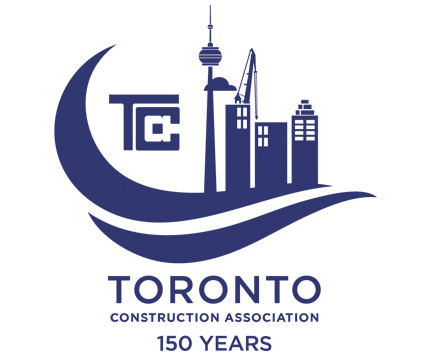
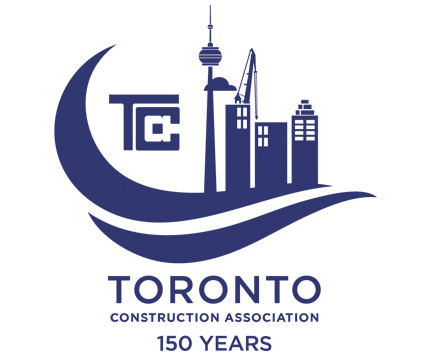

About Us
As a long-established institution in the building industry, and having served the Toronto area for over 25 years, we are committed in creating a long standing reputation of service and quality to both public or private clients with commercial or residential properties. Our numerous associations with businesses in the building industry, allow it to have an advantage in flexibility of pricing and servicing for our clients. We are dedicated to preserving your client's concrete structure by restoring its structural integrity, weather-resistance, functionality, and aesthetics.
CanMar provides all aspects of concrete restoration to parking structures and underground garages, which include traffic topping and waterproofing systems, mechanical expansion joints and caulking, sealer application and hydrodemolition.
CanMar specializes in areas such as post-tension cable repairs, balconies, and total structural slab removal and replacement.
In addition to our expertise in these areas, we will work with both your firm and clients to develop innovative approaches and solutions to provide quality concrete restoration service to extend the life span of the structure.


 
